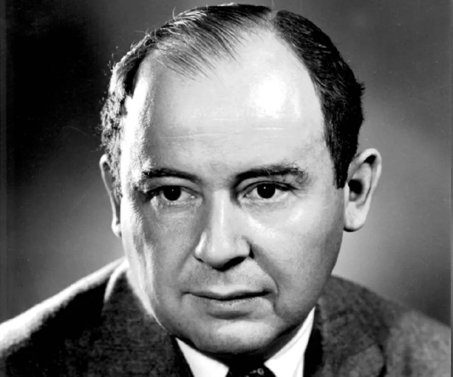

Les années 1980 et 1990 :
l'essor des ordinateurs personnels
Au début des années 1980, les processeurs ont connu une avancée majeure avec l'introduction de l'architecture de processeur RISC (Reduced Instruction Set Computer)
qui a permis d'augmenter la vitesse de traitement tout en réduisant la complexité du processeur.
Les processeurs RISC ont également permis aux ordinateurs de devenir plus abordables pour le grand public.
Dans les années 1990, l'introduction de processeurs multicœurs
a permis d'augmenter la puissance de traitement en utilisant plusieurs cœurs de processeur fonctionnant en parallèle.
Cette évolution a permis de traiter des tâches plus complexes et de réaliser des gains significatifs en termes de vitesse et d'efficacité énergétique.
Les personnages importants liés à la création des processeurs incluent John Von Neumann
, qui a développé l'architecture de von Neumann, qui a servi de base pour la conception de la plupart des processeurs d'ordinateur modernes.

(John Von Neumann)